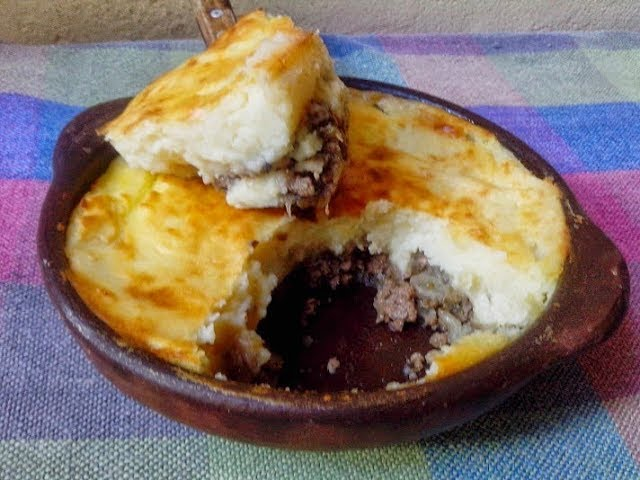

Pastel de papa

Ingredientes
1 kg de papas
½ taza de leche
100 g de Casancrem Clásico
Pimienta
1 cdita. de nuez moscada
1 huevo
1 cebolla
½ morrón
¼ diente de ajo
1 zanahoria rallada
1 cda. de aceite de oliva
1 kg de carne picada
1 cda. de pimentón dulce
1 cdita. de ají molido
Volver al menu